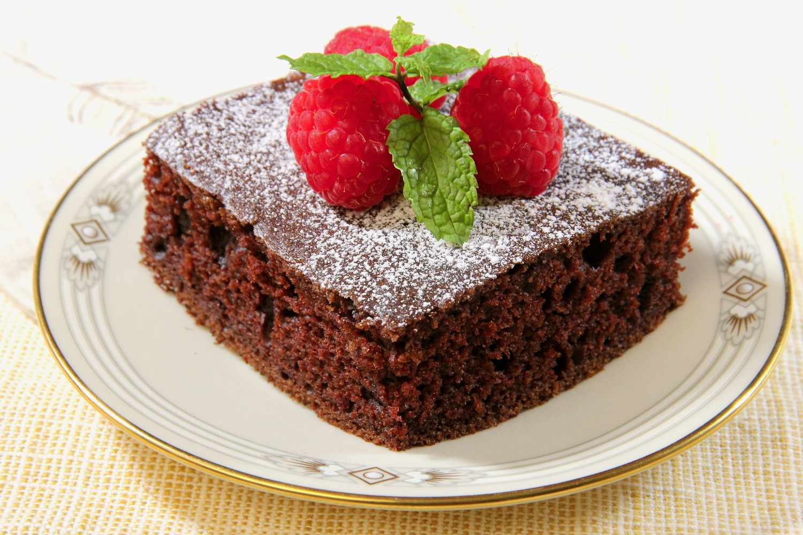

Amish Chocolate Cake
So moist, tender, and succulent you won't be able to eat just one piece. Delicious served with a dusting of confectioners' sugar, a scoop of ice cream, fresh fruit, dollop of whipped cream, or add frosting of your choice.

Ingredients
- cooking spray
- 2 cups all-purpose flour
- ⅓ cup unsweetened cocoa powder
- 2 teaspoons baking soda
- ½ teaspoon salt
- 1 ¼ cups brown sugar
- ½ cup unsalted butter, softened
- 2 large eggs
- 1 cup buttermilk
- 1 teaspoon vanilla extract
- ½ cup hot water
Directions
- Preheat the oven to 350 degrees F (175 degrees C). Spray a 9x13-inch baking dish with cooking spray and set aside.
- Whisk flour, cocoa powder, baking soda, and salt together in a large bowl.
- Cream brown sugar and butter together in a separate large bowl with an electric mixer until light and fluffy. Add eggs, 1 at a time, until well incorporated. Gradually add buttermilk, followed by vanilla extract, and mix until well combined.
- Add flour mixture to butter mixture in thirds, alternating with hot water, beginning and ending with the dry ingredients, beating just until combined. Pour batter into the prepared baking dish.
- Bake in the preheated oven until a toothpick inserted in the center comes out clean, 30 to 35 minutes. Remove baking dish from the oven and transfer to a wire rack to completely cool.
Nutrition Facts
(per serving)
228 Calories
9g Fat
33g Carbs
4g Protein